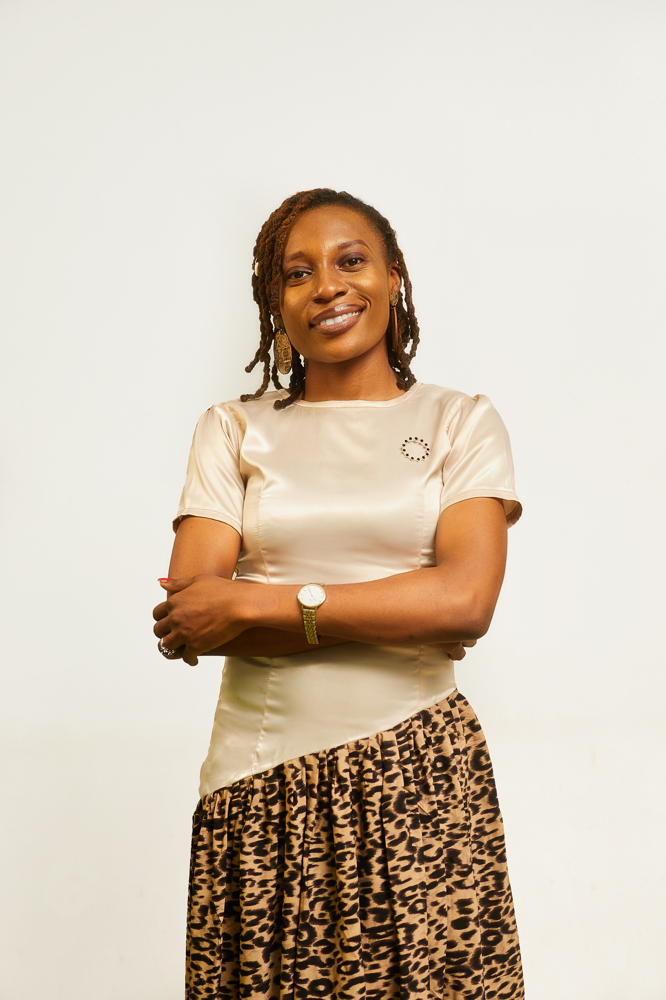
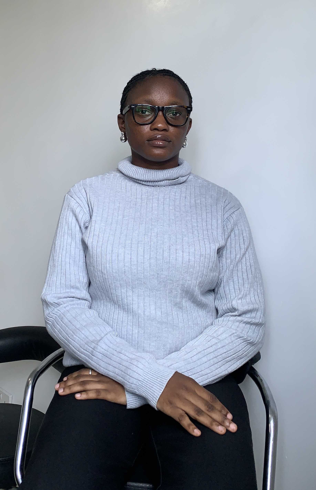
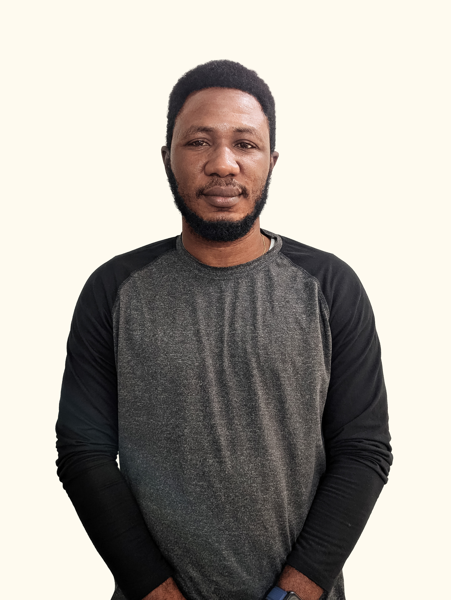

Technology for Social Change and Development Initiative (Tech4Dev)
is a non-profit social enterprise established in 2016 that creates
access to decent work and opportunities for Africans through
digital skills empowerment and advocacy.
At the heart of our work is the belief that sustainable
development cannot be achieved without addressing marginalized
communities' needs. We strive to create a more equitable society
by addressing the root causes of economic marginalization. Our
focus is on bridging the digital divide and providing underserved
communities with the tools and support they need to access decent
work and economic opportunities, thereby promoting social mobility
and reducing inequality.
Vision
Our overall vision is to scale access to sustainable tech careers
for young Africans and marginalized groups, transforming how
talent connects with opportunity – ensuring Africans achieve
economic prosperity.
Our platform bridges the gap between skilled African tech
professionals and long-term, well-compensated global engagements.
By prioritizing career development and fostering a vibrant
learning community, we empower individuals for lasting success,
simultaneously enabling business growth and economic development
in Africa by providing companies access to a highly skilled
workforce.
Our vision extends beyond global job placements. Through Tech4Dev,
we are actively driving digital skills education and advocating
for the inclusion of young Africans in the global economy. Our
mission is to equip them with the tools they need to achieve
financial freedom and contribute meaningfully to their
communities. By doing so, we are not just shaping careers, but
also fostering sustainable development and strengthening the
global tech ecosystem, starting with Africa.
MEET THE TEAM
Oladiwura Oladepo
Executive Director
She is passionate about a world of no poverty and believes that
improving the livelihood of women by giving them access to
financial independence, creating and providing them equal
opportunities will ultimately reduce the rate of poverty in
nations.
She works predominately in the technology space, championing
projects that bridge the digital knowledge divide between men
and women.
Diwura has a Master of Advanced Management from Yale School of
Management and an MBA from Lagos Business School, Pan-Atlantic
University. She serves on the Executive Board of the Lagos
Business School Alumni Association.
Oladiwura Oladepo
Executive Director
Joel Ogunsola
Founder / President
Joel has a strong passion for sustainable development, access to
skill and opportunity for young people, technology, and social
entrepreneurship.
Joel is focused on helping emerging underserved communities have
access to technology, and he does this by providing partnerships
and sustainability advisory for Tech4Dev.
He currently serves as the Senior Special Assistant to the
Governor on Innovation and Partnerships where he heads the Ondo
State Office of Innovation and Partnerships.
Joel Ogunsola
Founder / President
Abraham Akpan
Country Manager, Nigeria & Sub-Saharan Africa
Abraham Akpan is a 2021 Mandela Washington Fellow with over 8 years of experience in Africa's technology, startup, innovation, and development ecosystem. He specializes in designing, implementing, and leading programs targeted at both enterprise and human capital development. Abraham is dedicated to providing opportunities for Africans to be skilled for the future of work, embodying his motto, "No one must be left behind!
Abraham Akpan
Country Manager, Nigeria & Sub-Saharan Africa

Blessing Bamidele
Programs Lead for Basic Digital Skills
Blessing is passionate about women development, especially in the
areas of sexual and reproductive health. She finds time to train
women on healthy living and body hygiene.
She also works on topics relating to education and continuously
champion initiatives that is focused on digital literacy for
children.
Blessing is a graduate of Human Physiology from the University
of Calabar, Calabar. She enjoys taking up new challenges,
meeting people, and traveling to new places.
Blessing Bamidele
Head of Programs
Yemisi Shafe Adefolaju
Communications Lead
Yemisi loves telling stories; she believes that communications and
storytelling are powerful tools to change narratives and advance
change, especially for non-profit organizations.
She's passionate about helping people and believes that life has
more meaning when you can help make someone's life meaningful.
She's interested in art, reading, traveling,
volunteering/community involvement and music.
Yemisi Shafe Adefolaju
Head of Impact Storytelling
Adaeze Agunwah
Talent Lead
Adaeze is a Chartered Human Resource Professional with over five years of hands-on HR experience. She is passionate about people, growth, and meaningful work, and enjoys helping organizations build systems that support employees while enabling leaders to show up more intentionally.
Adaeze Agunwah
Talent Lead
Oluwafemi Sanya
Senior Business Manager
Oluwafemi is a community development professional with over a decade of experience leading and managing large-scale, donor-funded social programs. His work spans program administration, research, monitoring and evaluation across high-impact interventions serving youth, women, and vulnerable communities.
Oluwafemi Sanya
Senior Business Manager

Precious Tony-Akinlosotu
Legal Officer
Precious is a legal practitioner with a strong interest in technology and its role in driving social impact. She is passionate about leveraging legal expertise to support digital inclusion, data protection, and access to justice initiatives
Precious Tony-Akinlosotu
Legal Officer
Adewumi Adeyemo
A creative learning specialist with over a decade of experience, Adewumi Adeyemo designs learning experiences that prepare people for the demands of a fast-changing world. His work focuses on building essential, transferable skills that keep individuals relevant as technology reshapes work and opportunity. He has led digital learning and workforce development initiatives across diverse organizations, embedding AI literacy, career readiness, and inclusive design into large-scale training programs.
Adewumi Adeyemo
Jude Okiche
Graphics Design Lead
Jude is a designer with over four years of experience working across multiple industries, specializing in brand building and visual communication. He brings ideas to life through design, creating engaging visuals that make Tech4Dev’s digital skills, jobs, and entrepreneurship programs clear, accessible, and impactful.
Jude Okiche
Graphics Design Lead

Emmanuel Ari-Egoro
Technology Support Lead
With a background spanning customer service, IT operations, and product leadership, Emmanuel brings technical expertise and a people-focused approach to building secure, scalable systems. He has contributed to flagship programs such as the Digital for All Challenge, Women Techsters, Developer Foundry, and Microsoft AI Skills Week, helping expand access to digital skills and economic opportunities for youth and women across Africa.
Emmanuel Ari-Egoro
Technology Support Lead
Timothy Imanobe
Research and Policy Lead
Timothy leverages research, development, and policy expertise across the energy, finance, development, and technology sectors to shape evidence-based programs that drive social impact. He is passionate about mentoring young people, continuous learning, and advancing inclusive growth.
Timothy Imanobe
Research and Policy Lead
Peculiar Ogede
Programs Lead (Women Techsters Program)
Olabisi is a leader in promoting gender inclusion in technology, equipping women and girls across Africa with digital and tech skills to build sustainable careers. She drives digital transformation, advances equal opportunities in STEM, and supports youth development and social impact across the continent. Olabisi is a McKinsey Forward Alumni, UN SDSN SDG Advocate, LEAP Africa Women Leadership Alumni, and YALI RLC Fellow
Olabisi Etuk
Programs Lead (Women Techsters Program)
Peculiar Ogede
Community Manager
Peculiar is a community builder who creates spaces where people feel seen, supported, and empowered to grow. She has helped multiple communities evolve into vibrant, active networks, guiding members through learning journeys, professional development, and shared experiences. Known for blending empathy with strategy, Peculiar strengthens engagement, fosters healthy community cultures, and builds environments where people can confidently show up.
Peculiar Ogede
Community Manager
Uzoma Kalu
Senior Finance Manager
Uzoma drives financial integrity and operational efficiency, providing data-driven guidance on budgeting, cash flow, risk management, donor reporting, and compliance with global accounting standards. With over eight years of experience in Audit and Assurance, she strengthens financial systems and supports organizational growth. She is also passionate about women’s financial empowerment, promoting healthy financial habits for long-term economic stability.
Uzoma Kalu
Senior Finance Manager
Tamara Berepubo
Partnership Lead
Tamara Berepubo builds and strengthens strategic partnerships that drive scale, sustainability, and measurable impact. With experience across the public and private sectors, she supports collaborations that expand digital skills and economic opportunities. She is passionate about creating systems and partnerships that translate ideas into lasting outcomes.
Every day, we look to inspire growth and empower Africa for
decent work. A career at Tech4Dev offers you a chance to make a
difference in your life and in the lives of people we impact.
We have guaranteed opportunities to fulfill your full potential
while positively impacting the society.